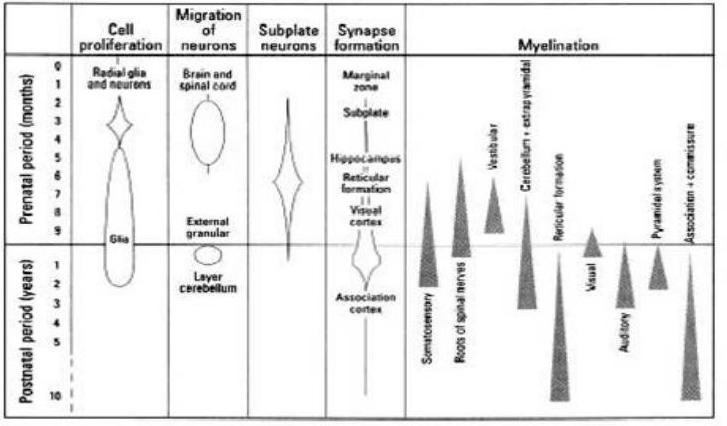

SECTION 2: Biology and physiology of reproductive systems
- Genetics
- Endocrine system
- Female reproductive system
- Male reproductive system
- Fetal development
Section 2 will introduce the biology and physiology of the reproductive health systems. The section will be divided into 5 parts. It will start with an overview of genetics, and then describe the endocrine system, next describe the female and the male reproductive systems, and finally close with an explanation of fetal development.
2.A. INTRODUCTION TO GENETICS
- Many human traits are passed from parents to offspring
- Genes are the basic units of heredity
- Genes are situated on chromosomes, which are comprised of DNA
- Humans have two copies of every gene: one from their mother and one from their father
Genetics is the study of heredity in living organisms. Heredity describes the passing of parental traits to offspring. For example, if a mother has black hair and her biological son has black hair, we can assume that heredity was involved in the passing of hair colour from mother to son. The study of genetics can thus explain why children look more like one parent or another, and why biological siblings have some similarities and differences. The term genetics contains the root word, gene. Genes are specific human traits that are passed from parents to their children. Essentially, genes are the basic units of heredity and heredity is the passing of traits to offspring. Humans have thousands of genes each. These genes are made of DNA or deoxyribonucleic acid. DNA is a chain of molecules that uniquely defines the individual traits that you possess. All humans have a different DNA pattern and this explains why no two human beings are exactly the same. The specific molecules of DNA that carry the hereditary information of humans are known as chromosomes. It is important to remember that each of our cells throughout our body thus contains these genes with our unique DNA pattern. However, all humans have two copies of every gene. One gene was inherited from the mother, and the other gene was inherited from the father. The image shows different types of human chromosomes pairs.
SEX DETERMINATION
- Sex chromosomes determine whether a baby will be male or female
- The mother has two of the same kind of chromosomes—two X's (XX)
- The father has two different chromosomes - X and Y (XY)
- The child will randomly inherit one chromosome from the father to be either XX (female) or XY (male)
There are a specific type of chromosomes that are known as the sex chromosomes. In humans, the mother's egg cell contains an X chromosome. The father's sperm cell contains either an X or a Y chromosome. An infant will inherit one pair of sex chromosomes, either one X from the mother and one X from the father OR one X from the mother and one Y from the father. This random inheritance will determine whether the child is a boy or a girl. It is important to note that the sex chromosome that a child inherits from its father will determine its sex. This is because the child will automatically inherit one X from its mother. For example if a baby inherits the X chromosome from its father, the child will be a girl, represented by a double X (XX). If the baby inherits the Y chromosome from its father the child will be a boy, represented by an X and a Y (XY).
EPIGENETICS
Changes in expression of genes not caused by alterations of the DNA sequence
May be caused by factors in the environment
- Potentially alter gene expression
- Potentially suppress or activate specific genes
Epigenetic changes may be reversible or permanent and passed down to subsequent generations (transgenerational)
Epigenetics is the study of inherited changes in phenotype (factors that account for appearance) that are not directly related to, nor explained by changes in our DNA pattern. For this reason, this field of study is known as "epi," the greek root for "above," indicating that a change has occurred that is not directly related to the genetic code, but above it somehow. In epigenetics, non-genetic causes are responsible for different expressions of phenotypes. Or, termed in a different way, epigenetics describes changes in the expression of our genes that are not caused by alterations in the DNA sequence. Essentially, a different factor accounts for the change in the gene expression.
Exogenous, or environmental components may affect gene regulation and thus, potentially, subsequent expression in the phenotype. Changes to gene expression that are induced by environmental contaminants can be permanent or transient. Research has shown that epigenetic changes may in fact be reversed.
2.B. ENDOCRINE SYSTEM
- Physiologic system that controls the proper functioning of multiple bodily functions and organs
- Comprised of ductless glands that secrete hormones into the bloodstream
- Essential role is to ensure a coordinated response between messages from internal organs and tissues
The endocrine system plays an essential role in the short term and long term regulation of metabolic pathways that control many development processes for men and women. Specifically, this system plays an important role in the proper functioning of the reproductive system.
A series of ductless glands make up the endocrine system. The most important glands in the endocrine system are the adrenal, thyroid, and pituitary gland, though reproductive organs, such as the female ovaries and male testis, are also considered endocrine glands. When a number of glands communicate with one another in a sequence, it is called a gland axis, like the hypothalamic, pituitary, and adrenal axis.
Common disorders of the endocrine system include over secretion or under secretion of specific chemical messengers. Such disorders commonly induce diseases that may affect the proper functioning of multiple organs and systems. Some diseases may be debilitating or even life-threatening.
The field of study that deals with disorders of endocrine glands is endocrinology.
HORMONES
- Diverse effects in the body
- Growth and development
- Mood
- Metabolism regulation
- Reproductive cycle control
Essential to maintaining health of the body!
- Fundamental components of the endocrine system
Hormones are chemical signals that transmit messages from one part of the body to another. They travel through the bloodstream to target specific tissues or organs. Hormones regulate many different processes, such as growth and development, metabolism, sexual function, reproduction, and mood.
Hormones also work to control natural chemical balances to ensure the body is in a stable state. They may induce immediate bodily effects, or work slowly, over time, to affect entire bodily processes. Hormones act as very powerful signals. It takes a very small amount of hormonal imbalance to cause significant changes in the human body.
TYPES OF HORMONES
Three basic classes of hormones
- Peptide-derived
- Amino acid chains
- Insulin, Luteinizing Hormone (LH), Follicle Stimulating Hormone (FSH)
- Steroid-derived
- Derived from cholesterol, cortisone, aldosterone
- Estrogen, testosterone
- Amine-derived
- Amino acids chains
- Catecholamine
There are different classes of hormones within the human body. Each type of hormone has a different function in the body. They are divided into three classes.
The first class of hormones are peptide-derived hormones, and are made of single amino acids that link to form amino acid chains. Some examples of peptide-derived hormones include insulin and two female reproductive hormones: Luteinizing Hormone (LH) and Follicle Stimulating Hormone (FSH). Insulin is the hormone that is responsible for maintaining appropriate blood sugar levels. LH and FSH will be discussed in upcoming slides.
A second class of hormones are the steroid-derived hormones. Examples of steroid hormones are estrogen and testosterone. These reproductive hormones will be described in the upcoming sections.
The third class of hormones are the amine-derived hormones. Similar to peptide-derived hormones, as they are also made of amino acids that link to form amino acid chains. Amine-derived hormones are specifically comprised of the specific amino acid that are known as tyrosine and tryptophan. Tryptophan is the precursor of serotonin and melatonin synthesis.
Note: Peptides consist of chains of amino-acids (oligo- or poly-peptides, proteins). Amines are derived from single amino-acids.
THE IMPORTANCE OF HOMEOSTASIS
A state of internal balance
Avoiding dramatic shifts in hormone levels that may negatively affect health
See-saw principle: cells send feedback signals to regulate proper levels of each hormone
- Usually negative feedback-signals tell endocrine system to reduce production of certain hormones
A central function of the endocrine system is the maintenance of homeostasis in the body. Homeostasis is defined as a stable, constant condition of a living organism, free from sudden fluctuation. Several regulatory mechanisms in the endocrine system allow homeostasis to occur. The endocrine system, and its complex processes, are responsible for a proper internal balance of the human body. Homeostatic regulation allows humans to function effectively even when they are exposed to different environmental conditions, such as temperature. For example, when human beings are in hot temperatures, sweat glands in the skin will produce sweat, thus bringing liquid to the surface for evaporation, and acting to internally reduce our body heat. This is an example of a homeostatic process.
When the endocrine system is not able to properly maintain homeostasis, serious life-threatening disorders and diseases may occur.
The endocrine system regulates proper balance of hormones in the body through a process known as the "seesaw principle." This principle describes the communication between cells and glands that secrete hormones to ensure proper hormonal balance. When there is an improper level of hormones in the bloodstream, cells will communicate with other cells to increase or decrease (as needed) the production of a certain hormone.
The slide demonstrates how the endocrine system regulates itself to promote homeostasis. Cell A (pink and red colored) will secrete hormone A which will influence cell B, and thus the secretion of cell B (gray colored). If cell B produces too much hormone B , cell A will sense this imbalance and decrease secretion of hormone A , which will in turn decrease secretion of hormone B by cell B. This regulation is known as a negative feedback loop because the resulting return to homeostasis occurs due to a decrease in hormone secretion.
EXAMPLE OF SEE-SAW PRINCIPLE
Insulin maintains proper levels of blood sugar
- If blood sugar falls too low = unconsciousness
- If blood sugar is too high = wasteful excretion into urine
Diabetes mellitus: occurs when insulin does not properly respond to changes in blood sugar levels
A good example of how the endocrine system maintains homeostasis via the see-saw principle is the maintenance of blood sugar levels by the hormone insulin.
Insulin is a hormone that causes certain cells to take up sugar, in the form of glucose, from the blood. The level of insulin in the bloodstream is a very important mechanism of central metabolic control.
If blood sugar falls too low in the body, the person may experience unconsciousness due to a lack of glucose. However, insulin also acts to ensure that blood sugar does not rise too high.
When endocrine control of insulin fails, diabetes mellitus may occur. However, if the body is in proper homeostatic balance via the see-saw principle, levels of blood sugar will be stable.
REPRODUCTIVE HORMONES
- Responsible for sexual development and reproductive health in women and men
- Female primary reproductive hormones:
- Estrogen
- Progesterone
- Luteinizing hormone
- Follicle stimulating hormone
- Male primary reproductive hormones:
- Testosterone
- Luteinizing hormone
- Follicle stimulating hormone
Different types of hormones are responsible for different processes in the human body. For example, there is a group of hormones responsible for the reproductive processes of the body. These are known as reproductive hormones and are responsible for many different processes related to sexual development and reproduction. Estrogen is a type of reproductive hormone and is the primary female reproductive hormone. Estrogen promotes the development of breasts and regulates the process of the menstrual cycle. Details of the menstrual cycle will be described in further slides. Progesterone is another type of female reproductive hormone. It is responsible for many processes during pregnancy, including the development of the fetus in the mother's womb. Luteinizing hormone, known as LH , is yet another female reproductive hormone. LH is essential for female reproduction. LH triggers ovulation and is responsible for releasing the female egg. Therefore, it plays an important role in the menstrual cycle. Finally, Follicle Stimulating Hormone (FSH), is a female reproductive hormone that regulates the development, growth, pubertal maturation, and reproductive processes of the female body. It also initiates follicular growth and prepares the body for the start of the next ovulation cycle. LH and FSH are reproductive hormones that work together and help control the menstrual cycle.
Men do not have the same reproductive hormones as women. Testosterone is the male reproductive hormone and is the principal male reproductive hormone. Testosterone is important in the development of male reproductive tissues such as the testes and the prostate. Testosterone also promotes hair growth and muscle development during adolescence, a stage known as puberty.
Sexual development and reproductive health for both women and men are dependent on the action of these reproductive hormones.
ROLE OF HORMONES IN SEX DIFFERENTIATION
- Testosterone secretion determines whether an embryo will develop into a phenotypic male or a female
- Secretion of testosterone will induce formation of male reproductive system
- Lack of secretion and/or response to testosterone can lead to failure to form the male reproductive system completely, leading to female characteristics
Reproductive hormones are responsible for deciding whether a developing embryo will become a phenotypic male or a female. Whether an embryo will develop into a male or female depends on the formation of reproductive duct systems and the differentiation of external genitalia. When a fetus is approximately 8 weeks old, it will begin to develop either male or female reproductive systems. The mechanism that decides the sex of the fetus is the secretion, or release, of testosterone or a lack of testosterone secretion. For example, if testosterone is released at approximately 8 weeks of fetal life, the fetus will develop a male duct system and external male genitalia. However, if secretion of testosterone does not occur, there will be no induction of male duct system differentiation, thus leading to development of the female duct system. A lack of testosterone release will lead to the development of female characteristics.
2.C. FEMALE REPRODUCTIVE SYSTEM
- Ovaries - where egg is produced
- Oviduct (Fallopian tube) - where fertilization takes place
- Uterus - where the embryo grows and develops
- Vagina - birth canal
The female reproductive pathway is comprised of the vagina, uterus, fallopian tubes, and ovaries. The vagina is where the male sperm first enter the internal pathway of the female reproductive tract and is also where a baby will leave the female's body once ready for birth. The next compartment in the female reproductive system is the uterus. This is the space where the fetus will develop. Next are the fallopian tubes. The female reproductive tract has two fallopian tubes, one on each side of the top of the uterus where mature eggs or ova move through to reach the uterus. Finally, the ovaries are the two round organs that produce the female egg cells. The ovaries rest outside of the openings of the fallopian tubes.
OOGENESIS
- Oogenesis is the production of the egg in the ovaries
- Begins when the female is an embryo
- all primary oocytes develop before birth and remain "dormant" in this stage until ready for maturation
Oogenesis is the term used to describe the creation of the egg, or ovum. The egg is the female cell that will be fertilized by a sperm to create an embryo that can develop into a fetus. The process of oogenesis begins when a female is still just an embryo. The creation of the female eggs occurs before or slightly after the birth of a female. At birth, a female will have 1,000,000 primary eggs, but only 200,000 are left by puberty. No additional primary eggs are created. Over a woman's reproductive lifetime, only 450 eggs complete oogenesis. The latency period render the eggs particularly vulnerable to environmental exposures.
You will notice in the diagram that for every mature ovum that is created, three polar bodies will also be created. However, the mature ovum is what is known as the egg. It is this egg that must be fertilized by a sperm in order for an embryo to grow into a fetus.
Oocyte formation in utero provides a susceptibility to epigenetics effects from maternal exposures and to third-generation effects.
In any one human generation, the egg's development starts before the female that carries it is even born; 8 to 20 weeks after the fetus has started to grow, cells that are to become mature ova have been multiplying, and by the time that the female is born, all of the egg cells that the ovaries will release during the active reproductive years of the female are already present in the ovaries. These cells, known as the primary ova,..., remain dormant until just prior to ovulation, when an egg is released from the ovary. Some egg cells may not mature for 40 years; others degenerate and never mature.
FEMALE REPRODUCTIVE HORMONE PATHWAYS
The hypothalamus and the pituitary gland are both in the brain.
Hormonal messaging between the hypothalamus, anterior pituitary gland, and ovaries regulates female reproductive system.
- Feedback loop controls proper hormonal balance.
- Hormones signal target female reproductive organs: breasts, uterus, and vagina.
The female reproductive system is regulated by a the signaling pathways of the female reproductive hormones described in previous slides. There are three key places in the female body that serve as hormonal messaging centers. They are the hypothalamus in the brain, the anterior pituitary gland, and the ovaries. The hypothalamus secretes a hormone that is called the gonadotropin-releasing hormone (GnRH). This hormone (GnRH) regulates the release of the luteinizing hormone (LH) and follicle-stimulating hormone (FSH) from specialized cells in the anterior pituitary gland. These hormones are released in short bursts. LH and FSH promote ovulation and stimulate secretion of the sex hormone estradiol, (an estrogen) and progesterone from the ovaries. These hormones circulate in the bloodstream and stimulate the target organs of the reproductive system, including the breasts, uterus, vagina. Proper functioning of the female reproductive system is dependent on the chemical messaging of the described hormonal pathways.
FEMALE MENSTRUAL CYCLE
- Each month, a woman's body prepares for the possible fertilization of an egg
- Ovarian Cycle
- An egg matures in the ovary and is released about 14 days from the last menstruation
- Uterine Cycle
- The lining of the uterus builds up to prepare for a fertilized egg. If no fertilization occurs, the lining breaks down and menstruation occurs
The female menstrual cycle is necessary for reproduction. This process is under control of the endocrine system. The menstrual cycle occurs as a result of a female body's preparation for potential fertilization of an egg by a sperm cell to create an embryo. During the ovarian cycle, a primary oocyte matures into a egg ready for release. The egg is released into the fallopian tube and is ready for potential fertilization by a sperm cell. At this moment, the uterus begins forming a layer of nutrient rich cells on its inner walls. This lining will serve as an implantation bed for a potentially fertilized egg. However, if the egg is not fertilized by the time the egg reaches the uterus, the uterus will shed the lining that was created. This is because there is no longer a need for an implantation bed because fertilization has not occurred. Menstruation occurs in monthly cycles throughout a woman's reproductive life. However, menstruation does not occur while a woman is pregnant, in the majority of women. Menstruation starts during puberty and ends permanently at menopause.
- Follicle is the egg and the cells surrounding it.
- One follicle fully matures during each ovarian cycle.
- Ovulation is the release of egg from ovary triggered by LH (Luteinizing Hormone).
The female menstrual cycle is regulated by specific hormones. Luteinizing hormone and follicle-stimulating hormone promote ovulation and stimulate the ovaries to produce estrogen and progesterone. These two hormones stimulate the uterus to prepare for potential fertilization. The cycle has three phases: follicular (before release of the egg), ovulatory (egg release), and luteal (after egg release). The menstrual cycle begins with the first day of bleeding. This is counted as day 1. The cycle ends just before the next menstrual period. Menstrual cycles typically range from about 25 to 36 days.
2.D. MALE REPRODUCTIVE SYSTEM
- Sperm are the male reproductive cells
- The penis is the male organ used in sexual intercourse
- The testes are where sperm are produced
- The scrotum contains the testes and controls temperature for sperm development
Unlike the female reproductive system, most of the male reproductive system is located outside of the body. These external structures include the penis, scrotum, and testicles.
Sperm are the male reproductive cells. The sperm cell consists of a head, a midpiece and a tail. The head contains the nucleus. The head is surrounded by an acrosome that contains enzymes for penetrating the female egg. The body has many mitochondria to provide energy for the journey through the female cervix. The tail or "flagellum" allows the sperm to move. Sperm is expelled (ejaculated) through the end of the penis.
The penis is the male organ used in sexual intercourse. It has three parts: the root, which attaches to the wall of the abdomen; the body, or shaft; and the glans, which is the cone-shaped part at the end of the penis.
Most men have two testes. The testes are responsible for making testosterone, the primary male sex hormone, and for generating sperm.
The scrotum is a sac of skin that hangs behind and below the penis. It contains the testes. The scrotum acts as a "climate control system" for the testes. For normal sperm development, the testes must be at a temperature slightly cooler than body temperature.
THE ROLE OF TESTOSTERONE
- Determines male sexual development
- Involved in healthy sperm and semen production
- Controls and regulates sexual behavior
Testosterone is an imperative sex hormone in male reproductive function. Specifically, it regulates spermatogenesis, the production of the sperm. A proper balance of testosterone in the male body is essential to maintain not only reproductive health, but overall health status. The figure is the representation of the testosterone molecule. Testosterone is a steroid hormone. Genetics also has a role in the development of the male reproductive system. For instance, they act as regulators of testicular descent.
SPERMATOGENESIS
- Occurs in the testes in the seminiferous tubules
- Mature in the epididymis and gain motility
- Produced constantly after puberty
Spermatogenesis describes the process of sperm cell development in the male. It is initiated in the male testis with the beginning of puberty. It entails numerous steps that one by one, lead to the development of a mature sperm cell. First, the process begins with rounded immature sperm cells. These cells first undergo mitotic division in which the genetic material in the immature sperm cell is replicated. Mitotic division indicates that the genetic material was separated into two identical copies of each other. Next, is a phase of meiotic division. Meiotic division refers to a cellular process that occurs in sex cells. This process divides the chromosome in half and produces two cells with half the genetic material in each cell. Finally, the sperm cells undergo a final metamorphic change to produce mature sperm.
Spermatogenesis is heavily dependent on appropriate levels of testosterone and may be affected by hormonal fluctuations in the body.
PRODUCTION FACTORS IN SPERMATOGENESIS
- Sperm production takes 70 to 80 days
- Between 20 and 375 million sperm are produced per day
WHO lower reference values for human semen
- Total sperm number 39 million per ejaculate
- Sperm concentration 15 million per mL
- Vitality 28% live
- Progressive motility 32%
- Total (progressive + non-progressive motility) 40%
- Morphologically normal forms 4%
This data represents reference distributions of semen characteristics of fertile men in a number of countries. They provide an appropriate tool in conjunction with clinical data to evaluate a patient's semen quality and prospects for fertility.
Spermatogenesis is a complex physiological process. The production of relatively high concentrations of sperm is essential for healthy reproductive function of males. On average, the process of sperm production takes between 70 to 80 days. A very large volume of individual sperm are produced every day, though it varies widely between 20 million and 375 million individual sperm cells.
Semen is the liquidly medium that provides sperm with nutrients as they travel through the female reproductive tract to fertilize the egg.
In every millimeter of semen, there are approximately 100,000,000 sperm, however, this number can also vary depending on a numerous internal and external factors. Epidemiologic research has ascertained that within a millimeter of male sperm, approximately 20,000,000 will be unviable to fertilize a female egg due to physiologic or chemical dysfunction.
2.E. CONCEPTION AND FETAL LIFE
- Ovulation occurs approximately 14 days after start of menses
- Sperm must be introduced in female system at any time from 2 days before to 15 hours after ovulation
- One sperm joins with an ovum forming an embryo
Reproductive health extends through conception and the development of the embryo and fetus!
Conception describes the process of the joining of sperm and egg. This process can only can occur during a short window of the menstrual cycle, either 2 days before or 15 hours following ovulation. Developmental processes related to human fertility and conception occur during limited periods of time. If sperm meets and penetrates a mature egg after ovulation, it will fertilize it. When the sperm penetrates the egg, changes occur in the protein coating around it to prevent other sperm from entering. However, both the female egg and male sperm must demonstrate proper structure and function in order for conception to occur.
EMBRYOGENESIS
Human embryogenesis is a process of very specific cell divisions and differentiations following fertilization of a male sperm with a female egg. Embryogenesis begins at the moment that a sperm meets with the egg and lasts until the eighth week of development. The original cell at fertilization is known as a zygote. The zygote will undergo specific cell division, known as cleavages. The different types of cleavages are outlined in the diagram. At approximately day five following fertilization, the zygote has divided multiple times and is now formally referred to as a blastocyst. In the first week, the blastocyst will implant into the uterine wall. Following this period, the mass of cells will differentiate and the first physiologic structures will be formed, including the beginnings of the umbilical cord.
ORGANOGENESIS
Organogenesis describes the process by which the cells differentiate into specific tissues that will later become internal organs. There are three specific tissues that develop during this period. They are the ectoderm, mesoderm, and endoderm. The ectoderm will form the external layer of organs. For example, the skin cells of the body will be formed from the ectoderm developed during organogenesis. The next type of tissue is the mesoderm, which will represent the middle layer of the organs. This type of tissue includes the red blood cells and skeletal muscle cells. Finally, endodermic tissue will be formed. The endoderm will comprise the internal layer of organs. An example of endoderm formation is the development of thyroid cells. Together, the ectoderm, mesoderm, and endoderm will create the essential organs for the developing fetus.
Internal organs begin to develop in utero between the 3rd and 8th week. During this critical window of development, the process of cell differentiation may be adversely affected by various environmental exposures. However, due to the complexity of organogenesis, as well as the poorly understood mechanisms of action for many exogenous elements on organogenesis, the exact health effects are difficult to presume. On this diagram, you will notice the transition from the zygote to the blastocyst described in the previous slide.
THE FETAL PERIOD
Begins at the termination of embryogenesis, or after the 8th week and lasts until the end of pregnancy
Characterized by two specific mechanisms:
- Rapid growth
- Cellular differentiation and organ development
Following the end of embryogenesis in the 8th week, the developing organism is officially known as a fetus. From this point forward, the developmental period is known as the fetal period. During the fetal period, the beginnings of all of the major organs are created through intricate cell divisions and differentiations. In addition to individual organs, physiologic systems are also developed.
The fetal period is defined by two major stages: rapid growth and cell differentiation. The first stage is rapid growth. Fetal growth is the most intense at the first week of fetal period and lasts through week sixteen. In this rapid growth phase, the fetus experiences a 25-fold increase in body weight.
The second phase of growth is defined by dramatic tissue and organ development. During the rapid growth period previously described, the fetus has not developed any mechanisms for proper cell differentiation. Therefore, during this second phase, complex processes of cell differentiation and cleavaging develop specific organs, organ systems, and tissues. In addition, the fetus takes the shape representative of an infant. Throughout the fifth month, muscle mass begins to develop and the mother may experience the first fetal movements due to this occurrence. By the six month, the lungs have fully differentiated and the fetus is able to independently breathe. The seventh month is marked by the development of the nervous system and the fetus is able to respond to basic reflexes, including constriction of the pupils in response to light.
The fetal period lasts until birth, at approximately the 38th week of development.
CRITICAL WINDOWS OF SUSCEPTIBILITY
Sensitive time interval during development when exposures to endocrine disruptors can interfere with physiology of cell, tissue, or organ
Exposure at specific windows may result in adverse and irreversible effects
A critical window of susceptibility is a period where there are numerous changing capabilities in the developing organism. Exposures to environmental contaminants during this window may result in permanent damage to a fetus and may have lifelong effects on health. Given that development continues after birth, critical and sensitive windows occur before, during, and shortly after the fertilization of the egg. Critical windows of development are also present during pregnancy, infancy, childhood, and puberty. The diagram provided demonstrates the particular windows of susceptibility for the developing fetus, in this case, of the nervous system. The maternal environment at these specific temporal windows has important implications for the healthy development of a fetus.
DEVELOPMENT OF THE FETAL ENDOCRINE SYSTEM
The endocrine system develops during an especially vulnerable fetal period
Involves the programming of homeostasis
An unhealthy environment may result in permanent "mis-programming" of the endocrine system
The majority of the endocrine system is developed during the fetal or neonatal period in humans. Most endocrine glands, like the thyroid, pancreas, adrenals, and gonads (reproductive organs), will form early in the second month and then differentiate into their respective physiologic forms in the third month. This development entails the initial programming of homeostasis, and will establish the definition of an appropriate hormonal balance for an individual throughout the rest of life. This can be thought of as an initial programming of the hormones needed to maintain the "see-saw" principle defined in a previous slide. For this reason, this specific period of endocrine system programming is imperative for future healthy homeostatic balance. Research has demonstrated that abnormal environmental factors during fetal or neonatal development may potentially result in permanent "mis-programming" of the endocrine system. "Mis-programming" may lead to the development of homeostatic imbalance and potentially subsequent disease.